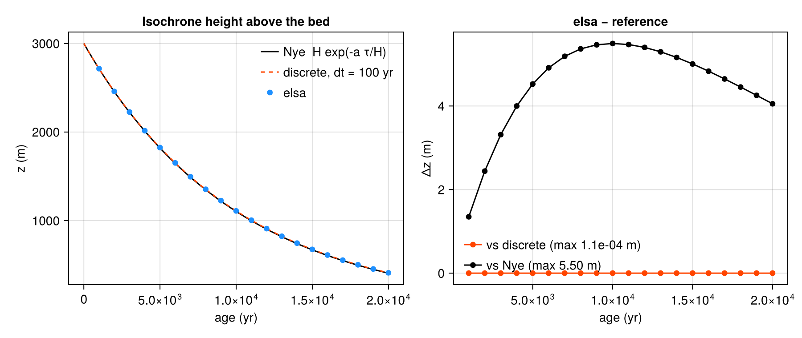

column
The Nye analytic ice-divide benchmark — test_column.x
What it tests
test_column.x is elsa’s end-to-end quantitative check: the whole pipeline — namelist, init, mass balance, normalization, layer insertion — driven at an ice divide where the answer is known in closed form.
At a divide there is no horizontal flow. With constant ice thickness \(H\) and constant accumulation \(a\), an isochrone laid down at the surface sinks under uniform vertical strain, and Nye’s steady solution puts it, after elapsed time \(\tau\), at a height above the bed of
\[ z(\tau) = H\,\exp\!\left(-\frac{a\,\tau}{H}\right). \]
Source: src/test_column.f90. Run it with make run-column.
The point: vertical motion is emergent
elsa never computes a vertical velocity. Each coupling step it adds \(a\,\Delta t\) to the top layer and renormalizes the column onto \(H\), which multiplies every layer height by \(r = H/(H + a\,\Delta t)\). After \(n = \tau/\Delta t\) steps,
\[ z = H\,r^{\,n} = H\left(1 + \frac{a\,\Delta t}{H}\right)^{-\tau/\Delta t} \;\longrightarrow\; H\,\exp\!\left(-\frac{a\,\tau}{H}\right) \quad\text{as } \Delta t \to 0. \]
So the vertical thinning is a consequence of the layer bookkeeping, not something imposed. The benchmark checks two separate things: that elsa lands on the discrete recursion \(H\,r^n\) exactly (a statement about the code), and that this converges onto the analytic Nye profile at first order in the coupling period (a statement about the scheme).
Results

- Against the discrete recursion: exact. All 20 isochrones land on \(H\,r^n\) to a relative error of \(4.9\times10^{-15}\) — machine precision on the in-memory double-precision state.
- Against Nye: first-order. At \(\Delta t = 100\) yr the maximum departure is 5.5 m out of 3000 m of ice, and halving \(\Delta t\) halves it. The convergence ratios measured at \(\Delta t = 200, 100, 50\) yr are 1.997 and 1.998, against a first-order expectation of 2.
The shape of the residual in the right panel — zero at the surface, zero at the bed, a smooth bump in between — is the fingerprint of a discretization error, not a bug.
Restart, in passing
The same benchmark asserts that elsa_end followed by a second elsa_init on the same object succeeds. v2.0 freed only seven of its nine arrays, so the second init aborted on an already-allocated array — which is why v2.0 could not restart. The bit-identical restart round-trip is checked in greenland.